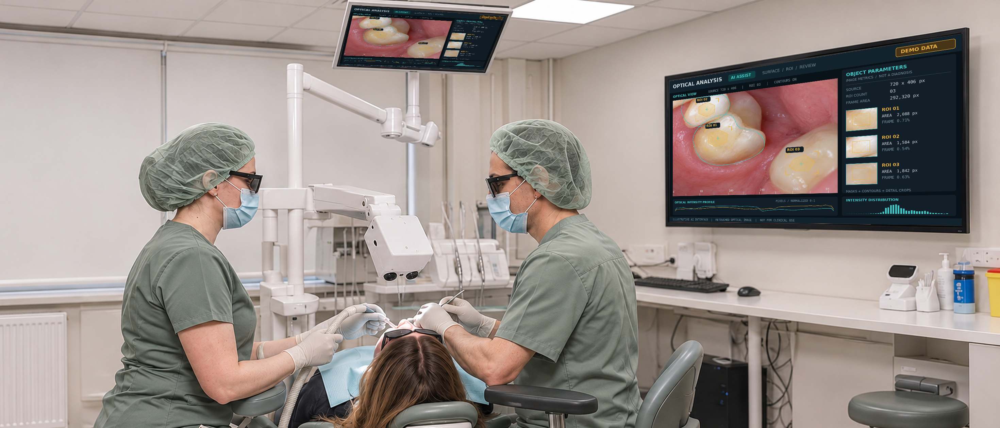

На ИИ потратили – эффекта не видим
Разберём, где утечка: метрика, процесс или выбор задачи.

КОР.САЙТ.01 · ГЛАВНАЯ
Промышленный ИИ · Диагностика до внедрения
По каждому процессу – решение: ИИ, Гибрид, Без ИИ или Отложить, границы его применимости и отдельный статус допуска к пилоту. Сначала диагностика и подписанное заключение с экономикой и рисками – потом работа.
Запросы · Лист 1 из 4
Разберём, где утечка: метрика, процесс или выбор задачи.
По каждому процессу – вердикт с обоснованием, включая те, где дешевле обойтись без ИИ.
«Теневой ИИ» – факт. Найдём, где он живёт, и предложим контур, который держит данные в компании.
Независимое заключение: мы зарабатываем на нём, а не на внедрении.
Порядок запуска и бюджет по волнам: что первым, что при тираже.
Бизнес-кейс с формулой и допущениями до первого рубля внедрения.
Опыт · Лист 2 из 4

Углеводороды и руды. Безопасность и логистика в суровых средах: шельф, лёд, удалённость.
ИИ – в видеоаналитике и прогнозе отказов; без ИИ – в допусках и регламентах безопасности.
Разбор кейса →
Межведомственная интеграция, закрытые контуры и публичные сервисы для людей.
Сначала единые данные и интеграция; ИИ – в обращениях граждан и анализе ДЗЗ.
Разбор кейса →
Весь жизненный цикл объекта: изыскания, проектирование, строительство, эксплуатация, продажи.
Гибрид в документообороте; без ИИ – в сметах и сверках.
Разбор кейса →
Флот и риски: метеообеспечение, контроль страхового покрытия, экономика редких, но крупных событий.
ИИ – в ледовой обстановке и разборе заявок; без ИИ – в тарифах и предупреждениях.
Разбор кейса →
Гео-ML мониторинг полей: от аэрофотосъёмки до результата для инспектора за 2 часа вместо 3 дней.
ИИ – в детекции по снимкам; отложить – где нет истории урожаев.
Разбор кейса →
Медицинские изделия и диагностика: ИИ-функции, регистрация ПО как медизделия, ЭПР, клиническая валидация.
ИИ – в визуализации и документации; автодиагноз – после датасета и валидации.
Разбор кейса →Форматы · Лист 3 из 4
Заключение – самостоятельный продукт, а не приглашение на внедрение.
Шаг 1
Короткая анкета и первичная карта: где ИИ стоит рассмотреть, а где точно нет. Онлайн через Council 7+1.
скоро
Шаг 2
Фикс-скоуп: аудит процессов, матрица решений с допуском по каждому вердикту, бизнес-кейс, дорожная карта от пилота до масштаба. 2–4 недели.
от 500 000 руб. за этап · возможна доля от эффекта (revenue share)
Шаг 3
На аутсорсе, неполная занятость (fractional CAIO): стратегия, управление ИИ-функцией, контроль внедрений. От 3 месяцев.
от 200 000 руб./мес · день в неделю – от 350 000 руб./мес
Шаг 4
Команда бюро делает то, что прошло диагностику. Стандарт промышленной эксплуатации, развёртывание на площадке заказчика при необходимости.
оценка после диагностики
Шаг 4 · или
Внедряют ваши разработчики или подрядчики, бюро контролирует соответствие заключению и архитектуре, принимает этапы.
по объёму внедрения
| Изм. | Что изменено | Дата |
|---|---|---|
| 1.2 | Допуск к каждому вердикту в заключении | 11.2026 |
| 1.1 | Экспресс-скрининг перенесён в платформу | 05.2026 |
| 1.0 | Первичная публикация форматов и цен | 2025 |
Бюро · Лист 4 из 4
Сергей Зубков лично ведёт диагностику и архитектуру и подписывает каждое заключение. Выводы по праву, финансам и отрасли проверяют приглашённые эксперты. Внедряет инженерная команда бюро или ваши подрядчики под нашим авторским надзором.
Вердикт отвечает на вопрос, чем решать задачу; допуск к пилоту – можно ли начинать сейчас и при каких условиях. Если условия выходят за заявленные границы, заключение пересматривается. Для промышленной эксплуатации нужен отдельный допуск.
20+ лет в IT и данных, 8+ лет в ИИ-проектах, 3 ИИ-продукта на рынке. Hands-on: сам проектирует и пишет код.

45 минут: ваш контекст и вопросы. На выходе – понимание, какой объём диагностики вам действительно нужен.